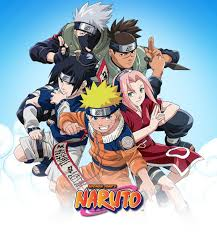
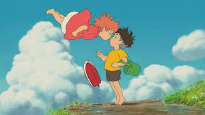
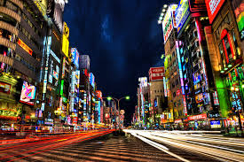
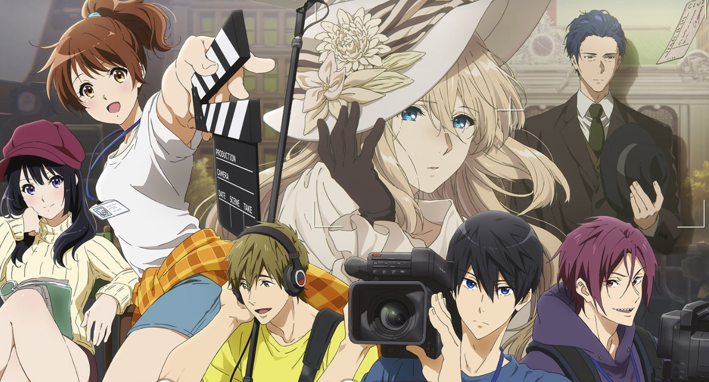

Japanese Anime & Manga
Anime and manga are integral parts of Japanese pop culture, captivating audiences worldwide with their unique storytelling, vibrant art styles, and diverse themes. From epic adventures to heartfelt dramas, they reflect Japan's creativity and imagination.
Popular Anime & Manga
One Piece

One Piece follows Monkey D. Luffy and his pirate crew on a quest to find the ultimate treasure, exploring themes of friendship, adventure, and dreams.
Naruto

Naruto Uzumaki's journey to become Hokage, mastering ninja skills and forming bonds, highlights perseverance, redemption, and the power of will.
Attack on Titan

In a world besieged by Titans, humanity fights for survival. This series explores freedom, conspiracy, and the cost of war.
Studio Ghibli

Studio Ghibli films like Spirited Away and My Neighbor Totoro blend fantasy with environmental themes, showcasing masterful animation.
Regional Influences

Tokyo - Urban Energy
Tokyo's bustling streets inspire high-energy anime like Death Note and Tokyo Ghoul, reflecting modern Japanese life.

Kyoto - Historical Depth
Kyoto's temples and traditions influence series like Inuyasha, blending history with supernatural elements.
Osaka - Fun and Food
Osaka's vibrant culture shines in anime like Food Wars, celebrating local cuisine and lively personalities.